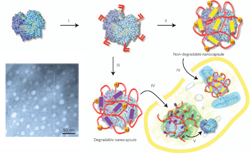
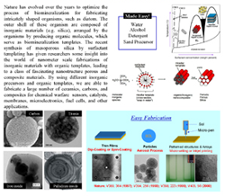
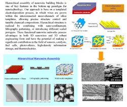
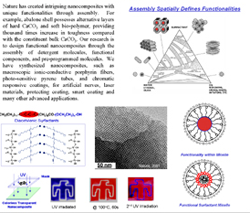
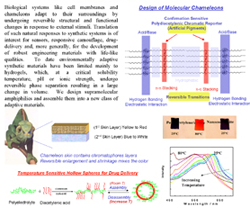

Surfing the history of human civilization, energy and water were probably the most essential elements drove the rise and decline of a nation. While advanced biomedical technology is somehow a luxury; as creatures, living better and longer has been our instinctive pursuit. Energy and biomedical research therefore have emerged as the most popular themes – to which the most research funding are going. To survive, we have piloted our focus from the mesoporous materials to energy and biomedical related research.
research interests
Solar, Supercapacitor and Battery Materials

Synthesis of Cu-In-S based nanoparticles and nanowires and use of such low dimensional building blocks for low-cost device fabrication; design and synthesis of hierarchical composites, including oxides and graphite with controlled structure and composition, Li-intercalatable nanostructure, and thin film devices.
Biomolecular Delivery and Biocomposites

Design and synthesis of nanocapsules of proteins, si-RNA, DNA and virus, with high delivery efficiency, intracellular stability and activity. Extensive research has been focusing on bio-distribution, therapeutic effect, immunoresponse and inter-cellular transport for imaging, cosmetic, therapeutic, bio-defense, and other applications. We are also interested in integrating bioactive molecules with synthetic materials leading to a new class of bioactive robust composites.
Nanostructures with critical dimensions less than 100 nm endow materials with unique and often superior mechanical, electronic, magnetic and optical properties. Device application however require successful translation of these properties into dimensions that people are able to handle with. The main research interest of our group is the Synthesis and Hierarchical Assembly of Nanostructured Materials towards Device Application using Self-Assembly Technique as a main tool. Please click following poster images to learn more about our ongoing research directions.
Hierarchical Porous Materials

The recent synthesis of mesoporous silica by surfactant templating has given researchers some insight into the world of nanometer scale fabrication, leading to a class of fascinating nanostructured porous and composite materials. In general, inorganic porous materials are formed by self-assembly of inorganic precursors, such as silicates, and amphiphilic organic templates followed by template removal. In most our syntheses, evaporation induced self-assembly (aerosol, dip/spin coating or spry dry process) is used. By exploring a large variety of inorganic precursors, organic templates and additives (especially hydrophobic and polymeric additives), we are able to fabricate a large number of ceramics, carbons, and composites with hierarchical structures for chemical warfare sensors, catalysts, membranes, microelectronics, fuel cells, and other applications.
Nanowire Microscopic Assemblies

Hierarchical assembly of nanowire building blocks is one of key features in the bottom–up paradigm for nanotechnology. Our approach is based on a templated electrodeposition process, in which wires are grown within interconnected meso-channels of mesoporous silica templates, allowing precise structure control and tunable chemical compositions. Hierarchical structure is realized by combining with nano-confinement, lithography patterning, or introducing different scaled porogens. These functional nanowire networks possess advantages in both 1D nanowires and 3D robust engineering form and have the potential of making a significant contribution in the field of sensors, catalysts, fuel cells, photovoltaics, high-density information storage, and thermoelectrics.
Functional Nanocomposites

Nature has created intriguing nanocomposites with unique functionalities through assembly. For example, abalone shell possesses alternative layers of hard CaCO3 and soft bio-polymer, providing thousand times increase in toughness compared with the constituent bulk CaCO3. Our research is to design functional nanocomposites through the assembly of detergent molecules, functional components, and pre-programmed molecules. We have synthesized different chromatic responsive coatings that suitable for artificial nerves, laser materials, protecting coatings, smart coatings and many other advanced applications.
Adaptive Responsive Assemblies

Biological systems like cell membranes and chameleons adapt to their surroundings by undergoing reversible structural and functional changes in response to external stimuli. Translation of such natural responses to synthetic systemsis of interest for sensors, responsive camouflage, drug-delivery and, more generally, for the development of robust engineering materials with life-like qualities. To date environmentally adaptive synthetic materials have been limited mainly to hydrogels, which, at a critical solubility temperature, pH or ionic strength, undergo reversible phase separation resulting in a large change in volume. We design supramolecular amphiphilies and assemble them into a new class of adaptive materials.